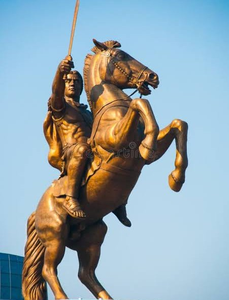
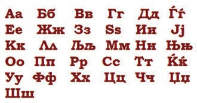

Capital excêntrica: Devido ao controverso projeto de revitalização "Skopje 2014", a capital transformou-se em uma das cidades com o maior número de estátuas e monumentos por habitante da Europa.
O macedônio padronizado é uma língua relativamente recente. Sua forma escrita oficial e o alfabeto cirílico local só foram estabelecidos em 1945.
A região histórica da Macedônia foi o berço do famoso conquistador Alexandre, o Grande, na Antiguidade.
Terra de Madre Teresa, a famosa missionária católica nasceu em Escópia, em 1910.

